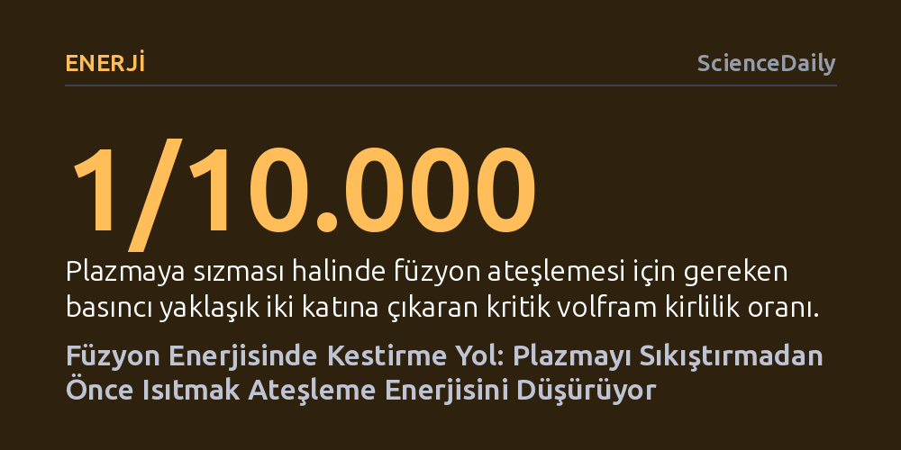

ENERJI · ScienceDaily · 2026-10-11
Princeton Plazma Fiziği Laboratuvarı araştırmacıları, geleneksel yöntemin aksine plazmayı önce ısıtıp ardından yoğunlaştırarak füzyon ateşlemesine çok daha az enerjiyle ulaşılabileceğini hesapladı. Dört yeni fiziksel etkeni hesaba katan bu model, reaktörlerin kendi kendini besleyen tepkime eşiğini aşmasını kolaylaştırabilir.
Füzyon enerjisine giden yolun aşırı sıkıştırmadan değil, plazmayı önce ısıtıp ardından yakıt ekleyerek enerji tüketimini kökten düşürmekten geçtiğini gösteriyor.

Füzyon araştırmacıları yetmiş yılı aşkın süredir, bir plazmanın harici ısıtmaya ihtiyaç duymadan tepkimeyi sürdürebilmesi için gerekli koşulları Lawson kriteri olarak bilinen matematiksel formülle hesaplıyor. Bu denklem plazmanın ne kadar sıcak, ne kadar yoğun ve ne kadar süre hapsedilmesi gerektiğini net biçimde ortaya koysa da bu hedeflere en az enerjiyle nasıl varılacağını tarif etmiyordu. Bugüne kadar geliştirilen füzyon stratejilerinin ve özel sektör girişimlerinin büyük çoğunluğu, plazmayı önce yüksek yoğunluğa ulaştırıp ardından devasa miktarda enerji vererek ısıtma yolunu benimsedi.
ABD Enerji Bakanlığı bünyesindeki Princeton Plazma Fiziği Laboratuvarı (PPPL) fizikçileri Luis Delgado-Aparicio, Masayuki Ono ve Jonathan Menard ise bu yerleşik mantığı tersine çevirmeyi öneriyor. Ekibin hesaplamalarına göre, plazmayı yoğunlaştırmadan önce ısıtmak ve yakıtı sonradan eklemek, ateşlemeye giden yoldaki enerji gereksinimini çarpıcı biçimde azaltabilir. Delgado-Aparicio bu yaklaşımı bir dağ geçidine benzetiyor: "Pek çok şirket dağa doğrudan tırmanmak ve oraya varmak için devasa enerji harcamak istiyor; oysa zirvenin etrafından dolanarak aynı noktaya çok daha akıllıca ve az enerjiyle ulaşılabilir."
Araştırmacılar, füzyon ateşlemesine giden matematiksel enerji haritasında "Cordey eyeri" adı verilen kritik bir geçiş noktası belirledi. Coğrafi olarak iki tepe arasındaki en alçak patikayı andıran bu eyer, dışarıdan ısıtmaya muhtaç plazma ile kendi kendini besleyen füzyon reaksiyonu arasındaki en erişilebilir sınırı temsil ediyor. Plazmanın bu eşiği aşması, füzyon reaksiyonlarının ürettiği ısının dışarıdan verilen enerjiden katbekat fazla olduğu "yanan plazma" evresine geçiş anlamına geliyor.
Bu rotanın verimliliğini ölçmek için füzyondan üretilen gücün dış ısıtma gücüne oranını gösteren Q katsayısı kullanılıyor. Sadece saf yakıt içeren kuramsal bir ortamda Cordey eyeri yaklaşık Q = 5 değerinde ortaya çıkıyor; yani reaktör sisteme verilen enerjinin beş katı güç ürettiğinde bu geçide ulaşılabiliyor. Ancak gerçek füzyon deneylerinde güçlü manyetik alanlar ve reaktör içi kirlilikler bu geçidin konumunu yukarı kaydırarak aşılması gereken Q değerini yükseltiyor.
Yeni çalışmanın en önemli bilimsel kazanımlarından biri, geçmiş araştırmaların aksine plazmayı tehdit eden fiziksel süreçleri tek tek değil, bir bütün halinde modellemesi oldu. Bu çerçevede reaksiyon atığı olan helyum külünün yakıtı seyreltmesi, iç kaplamalardan kopan yabancı maddeler, manyetik alandaki elektronların yaydığı sinkrotron ışıması ve sıcaklık arttıkça hızlanan ısı kayıpları tek bir denklem kümesinde birleştirildi. Bu etkenlerin hesaba katılması, tasarımların teoride sorunsuz görünse de pratikte beklenmedik engellerle karşılaşabileceğini gösterdi.
Çalışmanın en çarpıcı bulgusu, Güneş merkezinden daha sıcak ortamlara dayanabilmesi nedeniyle yeni nesil reaktörlerin iç duvarlarında yaygın biçimde tercih edilen volfram metaliyle ilgili oldu. Hesaplamalar, plazmaya karışacak on binde bir oranındaki küçücük bir volfram kirliliğinin dahi ateşleme için gereken plazma basıncını neredeyse iki katına çıkardığını ortaya koydu. Dahası, analiz iki boyuttan üç boyuta genişletildiğinde, gerekli bu basıncın plazmanın kararlılık sınırlarını aşabileceği ve reaktörün çalışmasını imkânsız kılabileceği saptandı.
İlginç bir şekilde, ateşlemeyi zorlaştıran bazı fiziksel kayıplar reaktör güvenliği açısından beklenmedik bir avantaj da sağlıyor. Füzyon araştırmacıları uzun süredir, reaksiyondan çıkan ısının tepkime hızını katlayarak kontrolden çıkması anlamına gelen "termal kaçak" riskinden endişe ediyordu. Ancak plazmadaki enerji kayıplarının bu artışı doğal yoldan frenlediği, böylece yanan plazmanın sürekli karmaşık müdahalelere gerek kalmadan kendi dengesini koruyabileceği anlaşıldı. Zaten saniyelerle ölçülen yakıt miktarı sayesinde füzyonda olası bir aksaklık patlamaya değil, sadece plazmanın soğuyup sönmesine yol açıyor.
Araştırma ekibi volfram kirliliği ve ısı kaybı gibi darboğazları aşmak için umut verici teknolojilere de dikkat çekiyor. Reaktörün iç çeperini sıvı lityumla kaplamak, hem volframın plazmaya karışmasını önleyebiliyor hem de ısı yalıtımını güçlendiriyor. Bunun yanında atom çekirdeklerinin dönüş yönlerinin önceden hizalandığı spin polarizasyonlu yakıtların kullanılması, füzyon tepkime hızını doğrudan artırarak ateşleme çıtasını aşağı çekebilecek bir diğer çözüm olarak öne çıkıyor.
Princeton ekibinin sunduğu bu "önce ısıt, sonra yakıt ekle" stratejisi şimdilik tamamen matematiksel hesaplamalara ve kuramsal öngörülere dayanıyor. Günümüzdeki deneysel füzyon reaktörleri henüz Cordey eyerinin gerektirdiği aşırı sıcaklık düzeylerine ulaşamadığı için öngörülen rotanın laboratuvar ortamında birebir doğrulanması henüz mümkün olmadı.
Araştırmacılar bir sonraki aşamada dijital deneyler ve gelişmiş bilgisayar simülasyonları yürüterek yöntemin tokamak ve stellaratör tipi reaktör tasarımlarına nasıl uyarlanacağını sınamayı planlıyor. Sonuçlar doğrulandığı takdirde, milyarlarca dolarlık pilot reaktör yatırımlarına başlamadan önce reaktör mühendisliğindeki hataları önleyecek ve ticari füzyon enerjisine giden süreci önemli ölçüde kısaltacak güvenilir bir yol haritası elde edilmiş olacak.